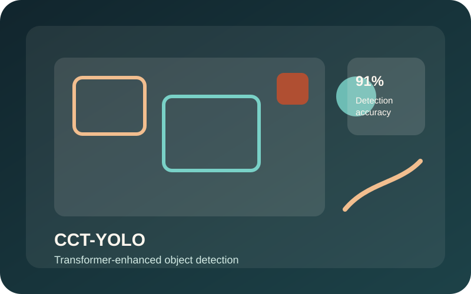
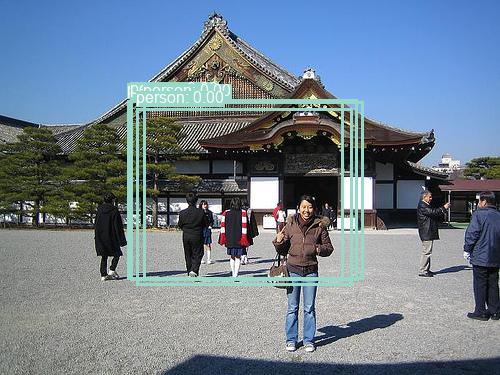
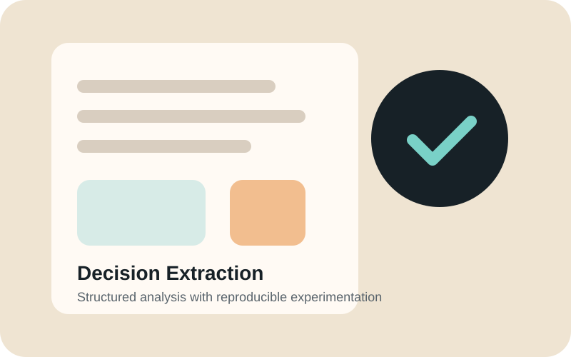
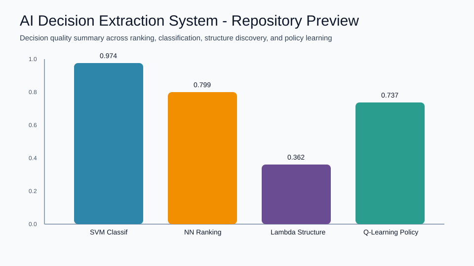
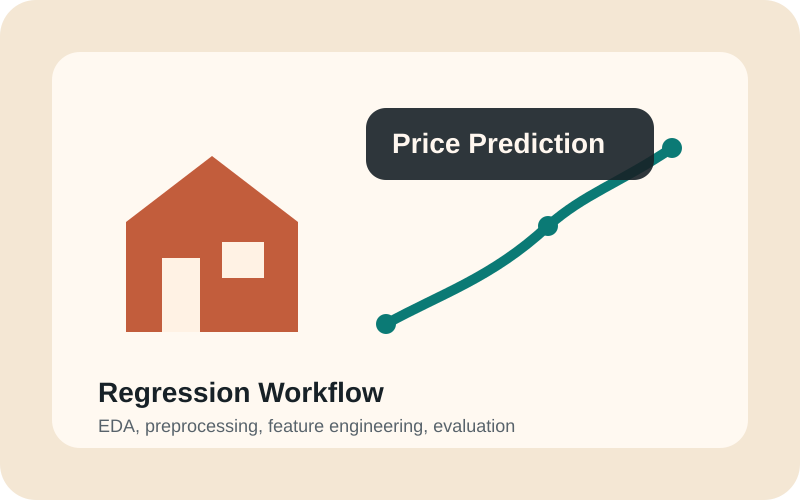
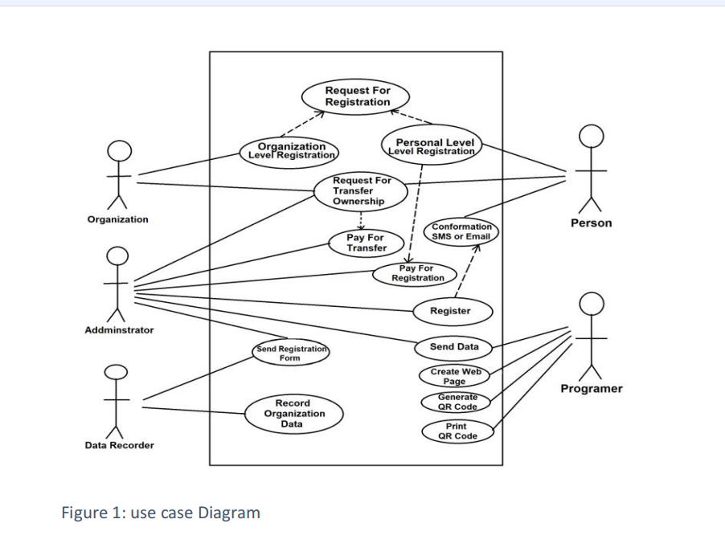
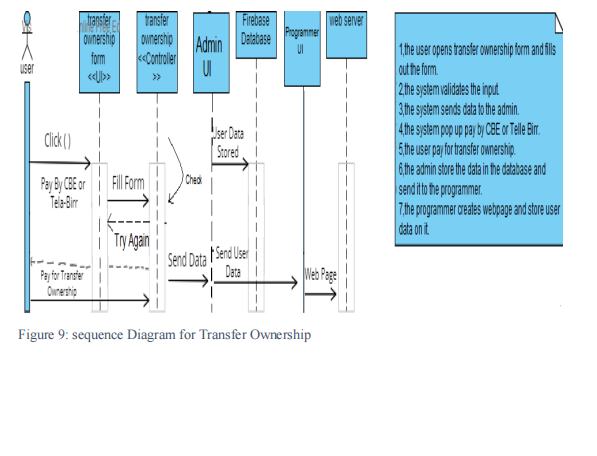

Software Engineering
Professional experience developing and maintaining software applications, working with databases, backend functionality, testing, and the software development lifecycle.
Home
Software engineer with professional development experience and graduate-level expertise in artificial intelligence, machine learning, and computer vision. I build practical software and intelligent systems that combine strong engineering foundations with data-driven methods, measurable evaluation, and real-world problem solving.
At a Glance
Professional experience developing and maintaining software applications, working with databases, backend functionality, testing, and the software development lifecycle.
Graduate-level experience applying machine learning, deep learning, reinforcement learning, and AI techniques to practical problems.
Designed and implemented transformer-enhanced object detection systems using YOLO, CCT, and deep-learning techniques.
Experience transforming data and model outputs into predictions, rankings, classifications, risk categories, and decision-support results.
Selected Results
Research Identity
Seeking graduate-level roles in Applied Machine Learning, AI Engineering, Computer Vision Engineering, and Research Assistant positions where rigorous experimentation and measurable impact are required.
M.S. Computer Science candidate with a 4.00 GPA, focused on translating academic research into practical systems through reproducible experiments, strong engineering, and clear technical communication.
Projects
Each project below is presented with research-style structure: problem framing, method and tradeoffs, reproducibility details, baseline comparison, and artifact links.
Aug 2025 - Dec 2025
Deep Learning - Computer Vision - Transformers - YOLO
CCT-YOLO is a lightweight object detection system that explores the use of a Compact Convolutional Transformer (CCT) as an alternative backbone for YOLO-based object detection.
The project was designed to investigate whether transformer-based representations could be integrated into an object detection architecture while substantially reducing model complexity.
Impact: Delivered a compact detection architecture with major parameter savings while preserving practical object-detection capability.
Real-time detectors can be accurate but computationally expensive. This project evaluated whether a transformer-informed backbone could significantly reduce model size while keeping practical detection performance.
A custom CCT backbone replaced a conventional YOLO backbone. The method prioritizes compactness and deployment efficiency, with tradeoffs in absolute detection performance versus heavier baseline models.
| Metric | Reference Baseline | CCT-YOLO (Proposed) |
|---|---|---|
| Parameter Footprint | 100% (reference) | 2.2% of baseline |
| Model Size | Larger baseline footprint | 5.22 MB |
| mAP@0.5 | Reference detector benchmark | 21.88% |
Future iterations can improve mAP with longer schedules, augmentation refinement, and architecture tuning while preserving compactness goals.
Python - PyTorch - YOLO - Transformers - CCT - Computer Vision


Jan 2026 - May 2026
Machine Learning - Software Testing - Software Engineering
ALMP is a machine-learning framework designed to improve the efficiency of mutation testing by intelligently prioritizing mutants according to their predicted testing value.
Instead of treating every generated mutant equally, the system explores how machine learning can identify mutants that are more valuable for testing.
Impact: Improved mutation-testing effectiveness under similar constraints by prioritizing higher-value mutants.
Mutation testing can become costly when all mutants are treated equally. This work targeted better effectiveness under constrained test budgets by ranking high-value mutants first.
An ML-based prioritization strategy ranked likely high-impact mutants. The approach increases yield per budget but introduces model and feature dependence.
| Metric | Baseline | ALMP (Proposed) |
|---|---|---|
| Mutation Score | 25% | 75% |
| Selection Strategy | Random / uniform | ML-prioritized ranking |
| Resource Yield | Lower yield per budget | Higher yield per budget |
Next work includes evaluation on broader codebases and additional feature engineering for stronger cross-project generalization.
The benchmark demonstrated the potential for adaptive ML-based prioritization to improve testing effectiveness under similar processing constraints.
Python - Machine Learning - Data Analysis - Software Testing - Visualization

Jan 2026 - May 2026
Artificial Intelligence - Machine Learning - Reinforcement Learning
This project explores how machine-learning and reinforcement-learning outputs can be transformed into interpretable decisions rather than simply presenting raw model predictions.
The system was designed as a reusable workflow for converting model outputs into practical decision-oriented information.
Impact: Converted raw model outputs into decision-ready insights that are easier for people to interpret and apply.
Many ML systems stop at raw predictions. This project focused on transforming those outputs into ranked and categorized decisions that are more actionable for users.
Combined clustering, classification, neural workflows, and reinforcement learning in one decision-extraction pipeline. This improves actionability while increasing implementation complexity.
| Dimension | Prediction-Only Baseline | Decision Extraction Workflow |
|---|---|---|
| Output Format | Raw labels / probabilities | Actionable decision views |
| Interpretability | Lower for non-technical users | Higher with explicit decision framing |
| Decision Utility | Requires extra translation | Ready for applied decision support |
Future work can include uncertainty quantification and human-in-the-loop validation for stronger reliability in high-stakes decisions.
Turning model outputs into information that people can understand and use.
Python - Scikit-learn - Machine Learning - Reinforcement Learning - Jupyter Notebook


Aug 2025 - Dec 2025
Machine Learning - Data Science - Predictive Modeling
A comparative machine-learning analysis applying supervised and unsupervised learning techniques to housing and Iris datasets.
Impact: Built a full end-to-end ML workflow showing benchmark-level and real-world dataset behavior side by side.
Used interpretable baseline models and unsupervised methods to balance explainability with predictive performance on both benchmark and real-world data.
| Metric | Reference / Baseline | Project Result |
|---|---|---|
| Iris Classification Accuracy | Standard benchmark expectation | 100% (test split) |
| Housing Regression (R2) | Linear baseline benchmark | 0.548 |
| Housing KNN Classification | Quartile classification baseline | 67.06% accuracy |
Python - Scikit-learn - Pandas - NumPy - Matplotlib - Jupyter Notebook

Bachelor's Degree Graduate Project · Bahir Dar University · Sep 2021 - Aug 2022
Designed and developed a Java-based laptop security and anti-theft system that connects digital ownership records with physical devices through unique QR-code identification. The system provides a digital workflow for laptop registration, ownership verification, and device identification, using Firebase for data management and APIs to support system functionality.
Impact: Strengthened laptop ownership verification and recovery workflows with a practical QR-based security system.
Implemented QR-linked digital ownership records to improve verification speed and traceability, with operational dependence on reliable registration and data hygiene.
| Dimension | Traditional Workflow | GLO-SEC Workflow |
|---|---|---|
| Ownership Verification | Manual checks | QR-enabled digital verification |
| Traceability | Limited record linkage | Device-to-owner digital linkage |
| Operational Consistency | Process-variable | Structured registration flow |
Java - Firebase - APIs - QR Code Technology - Database Systems


Experience
Kimiya Telecom · Sep 2022 - Jul 2023
Addis Ababa, Ethiopia
Bahir Dar Institute of Technology, Bahir Dar University · Mar 2021 - Aug 2021
Bahir Dar, Ethiopia
Digital ID & Campus Access Control System
A-CLASS Concierge Services LLC
Jun 2024 - May 2026
Washington, DC
Provide professional customer service and operational support in an on-site environment.